/* russell-lee - proofs */
12 plates. Deterministic overlays rendered by the composition-analysis skill.
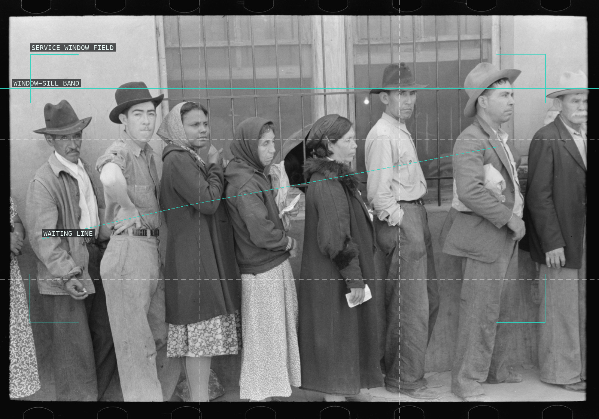
01-relief-line-commodities-san-antonio
Bodies and the long wall turn waiting into a receding public line.
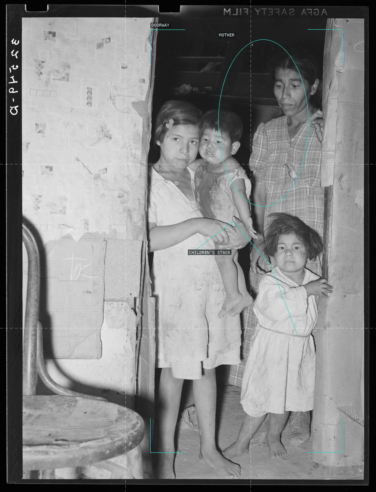
02-mexican-mother-and-children-san-antonio
The doorway compresses a mother and children into a tightly layered domestic frame.
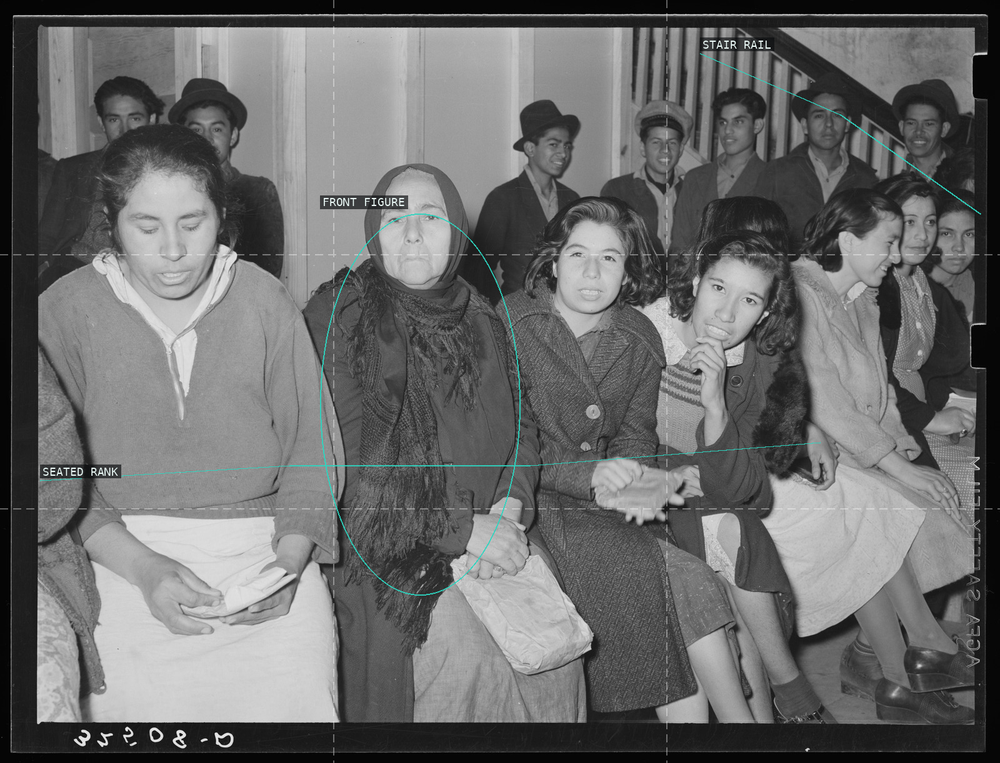
03-pecan-workers-union-hall-san-antonio
The crowded seated rank stretches the union hall into a shared waiting room.
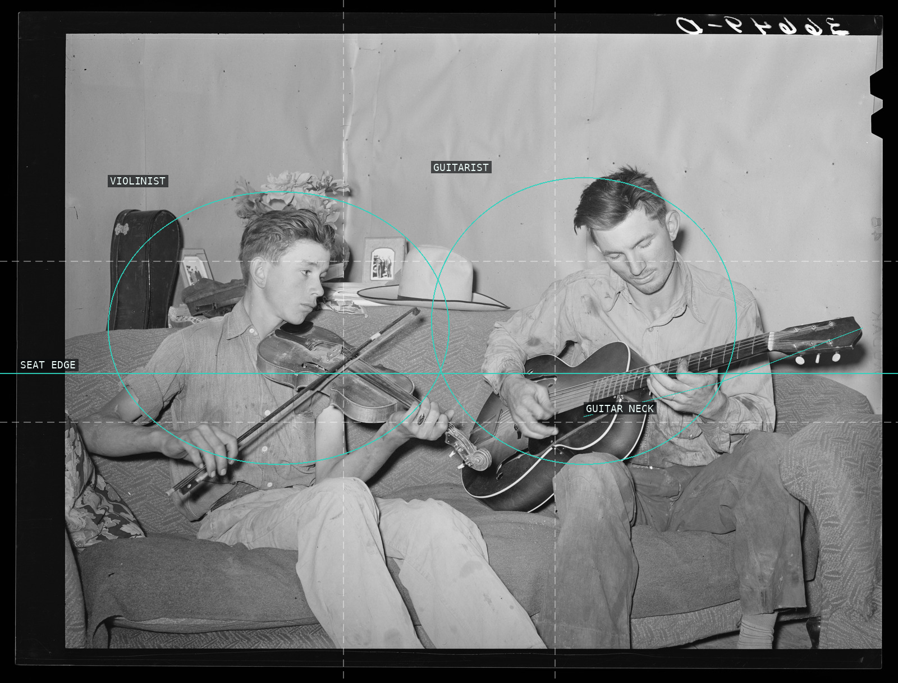
04-farmer-brother-making-music-pie-town
A couch edge and two instruments turn a small room into a paired performance stage.
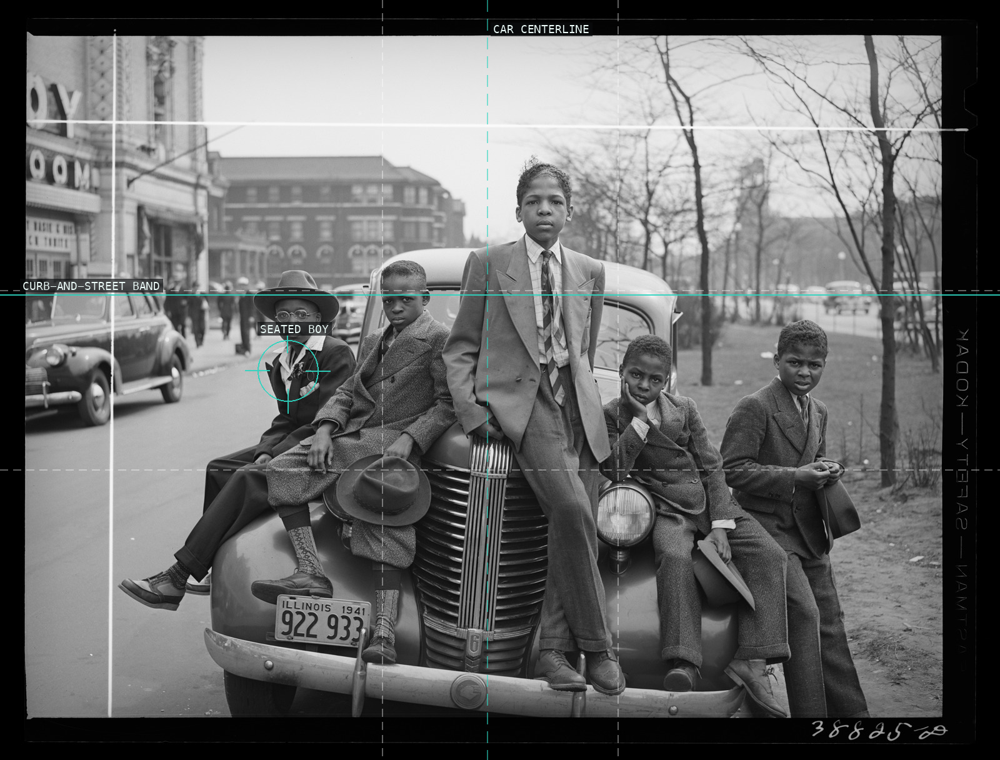
05-negro-boys-easter-morning-chicago
The car's center and the receding street hold a lively, uneven cluster of boys.
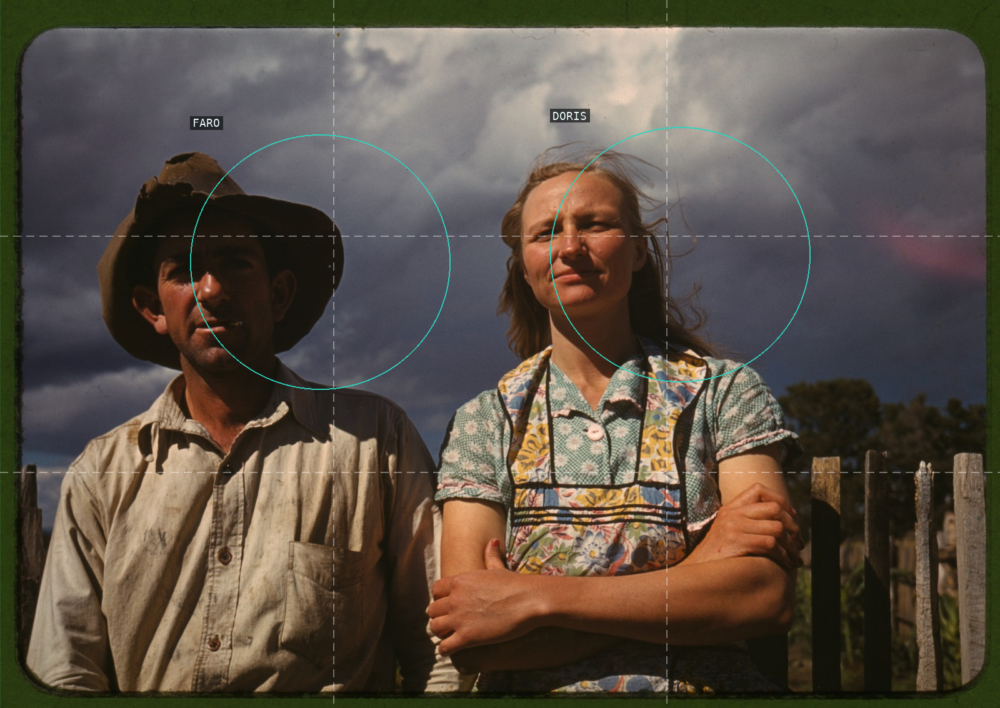
06-faro-doris-caudill-pie-town
A dark fence line and a narrow interval hold the portrait's deliberately still pair.
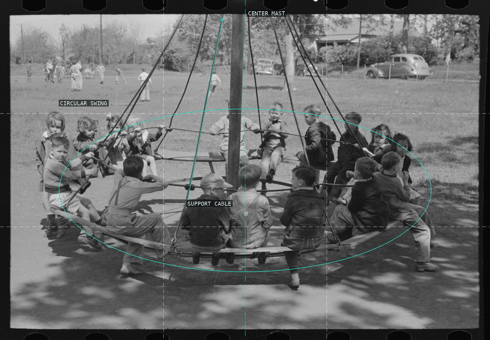
07-schoolchildren-circular-swing-san-augustine
The central mast and its cables turn the crowded swing into an orbit.
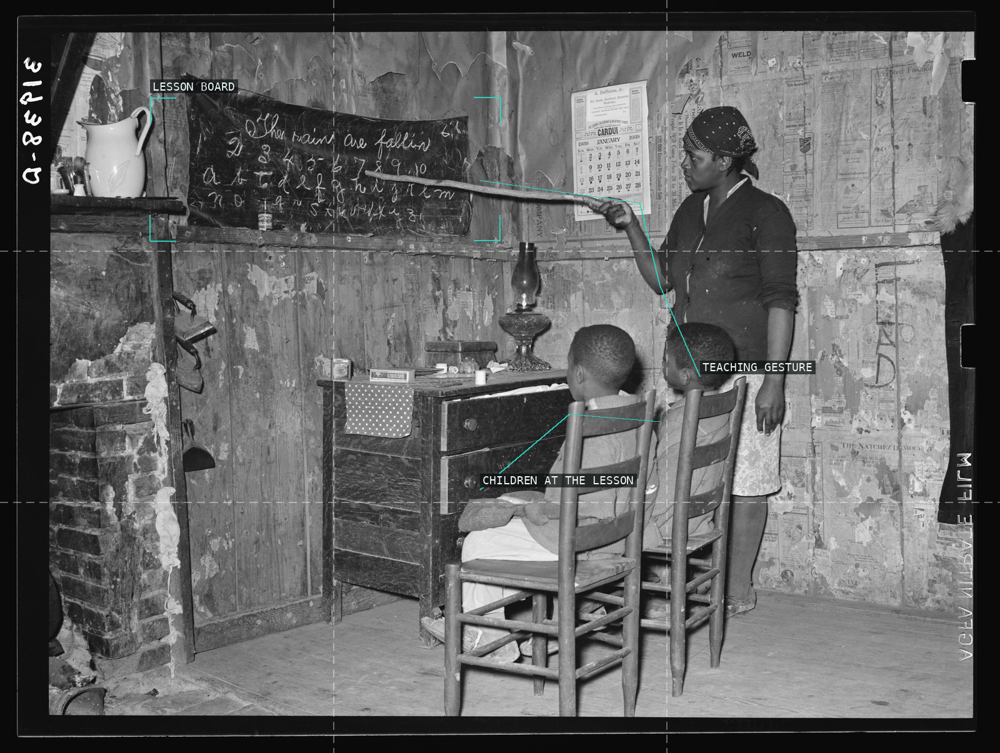
08-mother-teaching-children-transylvania
A chalkboard and a raised gesture make a domestic room read as a lesson.
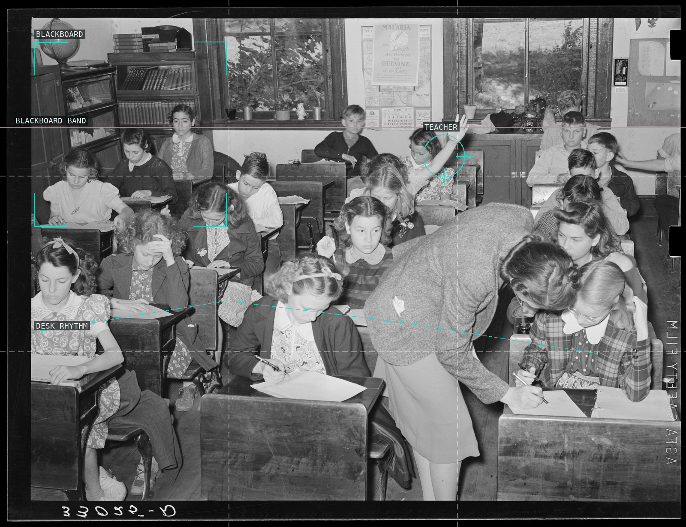
09-schoolroom-san-augustine
The rear windows and the teacher among the desks make the busy classroom readable as a working room.
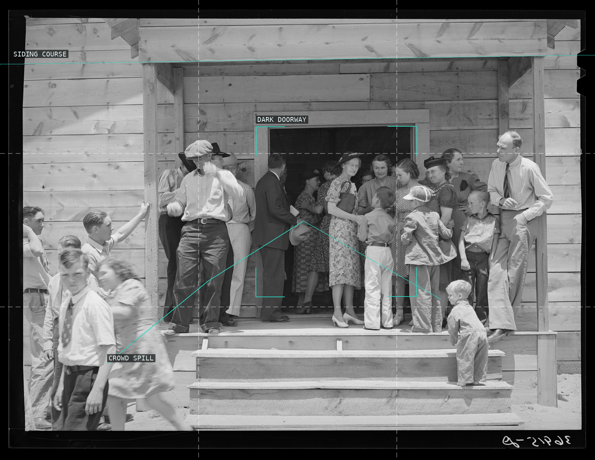
10-people-leaving-church-pie-town
The dark doorway releases a crowd outward over the bright steps.
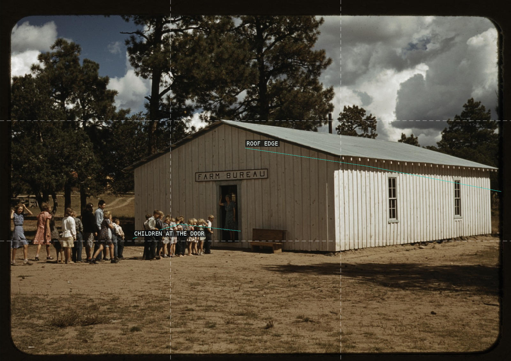
11-school-farm-bureau-pie-town
A long roof edge and the children at the door make an improvised civic building claim its ground.
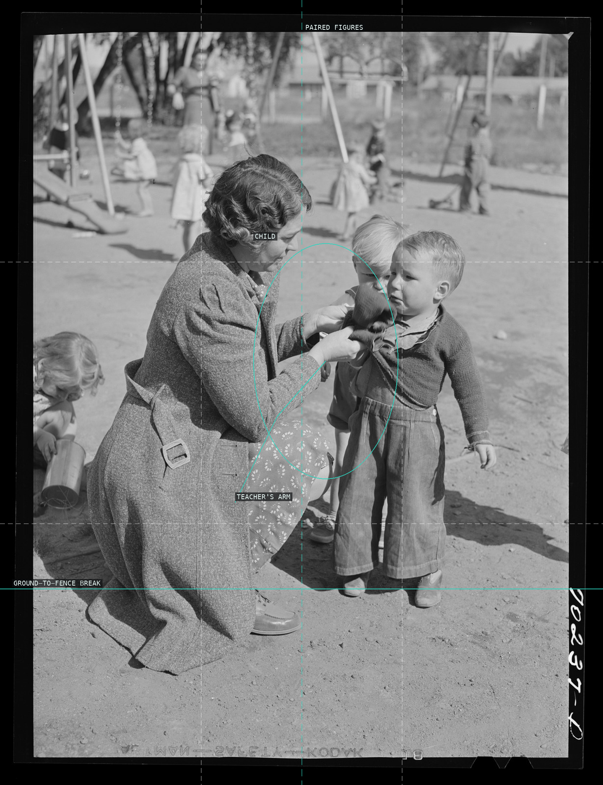
12-children-teacher-yakima-camp
A teacher's bent arm makes a small, concentrated bridge to the child.